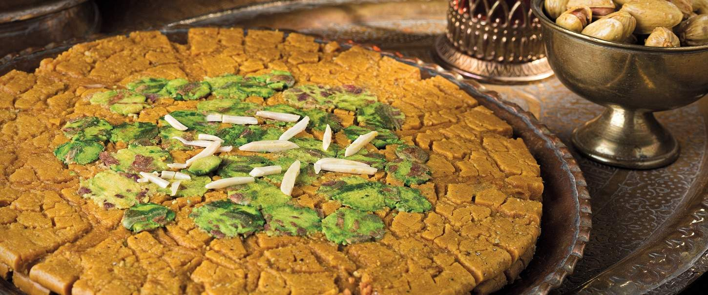
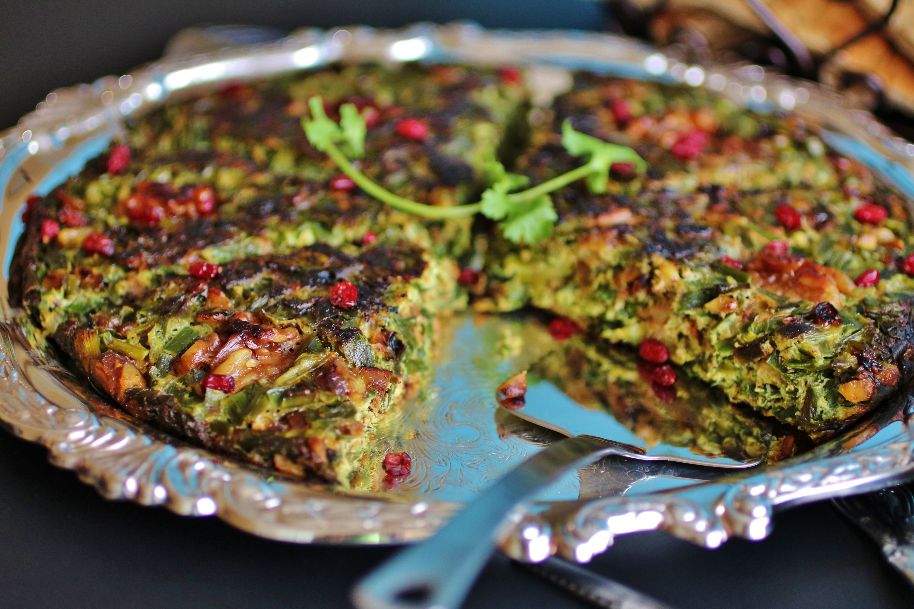
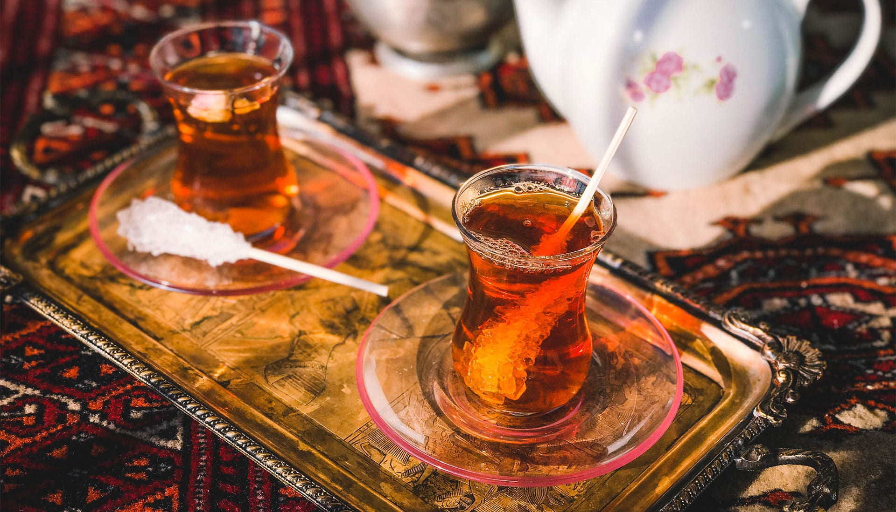
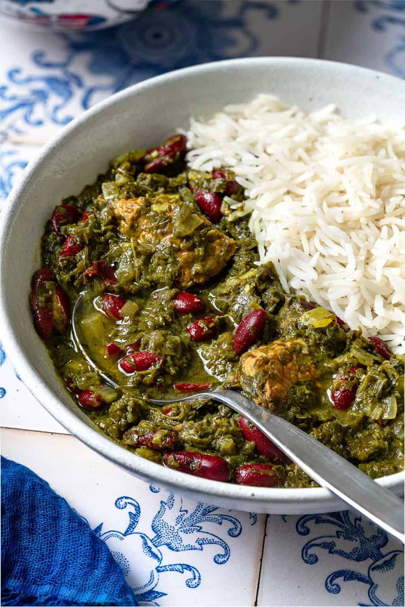

The centerpiece
Tahchin
Tahdig is the golden, crackling layer of rice pulled from the bottom of the pot, and it's often the most fought-over part of the meal. Butter, saffron and a thin layer of potato or bread line the pan before the rice steams above it, so the bottom fries slowly while the rest cooks soft. Every household keeps its own method, passed down more by feel than by recipe, and a good tahdig is judged by the sound it makes when it's lifted out in one piece.

From the grill
Kebab Koobideh
Ground lamb or beef is mixed with grated onion and a little baking soda, then pressed flat onto wide skewers and cooked fast over charcoal. The fat renders as it grills, basting the meat and keeping it loose rather than dense. It's served with grilled tomato, a mound of buttered rice, and sometimes a raw egg yolk stirred through — simple, but it's the dish most Iranian grills are judged by.
A Persian meal rarely arrives one dish at a time. The rice, the stew, the herbs, the yogurt and the bread all land on the sofreh together, and everyone serves themselves through the course of the meal rather than in courses. Meals lean on slow-cooked stews called khoresht, built from herbs, fruit or beans and eaten over rice, and on a pantry of dried limes, saffron, barberries and rosewater that shows up across sweet and savory cooking alike.

SohanIranian Sohan is a traditional, crunchy saffron-infused brittle toffee originating from the city of Qom, Iran.

Kuku SabziA thick herb frittata packed with parsley, dill and coriander, sliced thin and served warm or cold with flatbread.

ChaiBlack tea steeped strong in a samovar and poured pale or dark depending on how long it's been brewing.

The everyday stew
Ghormeh Sabzi
A deep green stew of sauteed herbs — parsley, coriander, fenugreek — simmered for hours with kidney beans, lamb and dried limes. The fenugreek gives it a slight bitterness that balances the sourness of the lime, and the herbs are meant to cook down until the oil separates and rises to the top. It's often called Iran's national dish, and most families have a version they consider the only correct one.
Rice is rarely just a side. Plain steamed chelow sits under most stews, while polo dishes cook rice together with fruit, herbs or meat from the start — barberries and orange peel in zereshk polo, dill and fava beans in baghali polo, sour cherries in albaloo polo. Getting the grain right, separate and fluffy with a crisp tahdig underneath, is treated as its own skill.